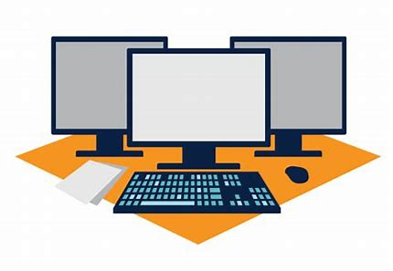
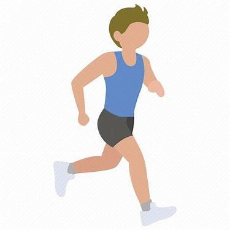

ICT-Arbeitsplatz mit Betriebssystem in Betrieb nehmen

Diese Woche im ZLI hatten wir unser erstes Modul 187 ICT-Arbeitsplatz mit Betriebssystem in Betrieb nehmen.
Überbetriebliche Kurse
Zum ersten Mal in der Lehre hatten wir ein ÜK. Dort lernen wir über ein bestimmtes Thema was wir in unserer Lehre als Informatiker brauchen werden. Diese ÜK's werden auch bewertet, deswegen muss, man besonderst aufpssen.
Wir haben uns weiter mit den einzelnen Komponennten des PCs befasst und ich habe auch viele neue Sachen gelernt, wie zum Beispiel neue Anschlüsse, wie die verschiedenen Kabel heissen oder auch wie ein Prozessor aufgeaut ist.
Am Ende des ÜK's wird es eine Theorieprüfung und eine Praktischeprüfung geben. Dazu müssen wir noch eine Dokumentation gestalten die dann auch zur Note zählt.
Am Ende vom jeden ÜK Tag fassen wir in einem Arbeitsjournal alles zusammen war wir heute so gemacht haben. Was alles im ÜK benotet wird ist unten aufgelistet.
- Dokumentation
- Theorieprüfung
- Praktischeprüfung
- Mitmachen ect.
Fazit
Mein Fazit ist das ich es echt spannend fande wie die ÜK's aufgebaut sind.
Man lernt dort viel intensiver als sonst das fand ich aufregend aber auch ansterngend.
Sportprüfung

Diese Woche hatten wir unsere erste Prüfung in der Berufsschule. Es war eine Sportprüfung, diese beinhaltete einen 3KM Lauf.
Berufsschule
In der Berufsschulehatten wir die gleichen Themen wie die letzten beiden Wochen. Wir haben uns den Datenschutz nochmal genauer angekuckt und am Excel-Workshop weiter gearbeitet.
Doch nachdem Mittagessen hatten wir einen 3KM Lauf. Das war ungünstig für mich, weil ich davor viel zum Mittag gegessen hatte. Trotzdem konnte ich noch eine einigermassen gute Note holen.
Meine Zeit war ungefähr 16 Minuten das gab eine 4.6 Note. Den rest des Tages war ich dann ziemlich fertig wegen der Prüfung.
BMS
Diese Woche hatte ich in der BMS 2 Prüfungen, eine Französischprüfung und eine Chemieprüfung. Dazu haben wir noch die Note von der Franzprüfung der letzten Woche zurück bekommen. Ich war sehr überrascht mit meiner Note ich bekam eine 5.9.
Bei der Franzprüfung hatte ich leider einige Schwierigkeiten. Doch die darauffolgende Stunde hatten wir dann ein Chemietest. Die Prüfung mussten wir auf dem Computer machen. Der Test verlief erstaunlich gut und ich bekam die Note 6.0. In den restlichen beiden Fächern hatten wir ein wenig Theorie und sonst haben wir uns auf die Prüfungen
zu den Fächern vobereitet.
- Sportprüfung
- Französischprüfung
- Chemieprüfung
Fazit
Ich bin sehr zufrieden mit meinen jetzigen Noten aber diese Woche war bisher mt abstand die anstrengenste Woche überhaupt. Doch dafür fand ich es viel aufregender als die letzten Wochen.